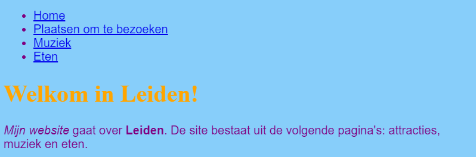

Veel websites hebben een navigatiemenu waarmee bezoekers tussen pagina's kunnen navigeren. Nu je een aantal pagina's, een startpagina en links naar elke pagina hebt, kun je de lijst met links naar een navigatiegedeelte bovenaan elke pagina verplaatsen.
<ul> tag druk je op Enter om een nieuwe lege regel te maken en typ je vervolgens op de nieuwe regel de volgende tag: <nav>.
Trinket voegt automatisch de afsluitende tag meteen toe, maar je kan die verwijderen - hij staat niet op de juiste plaats.
</ul> tag druk je op Enter om een nieuwe lege regel te maken en typ je daar de afsluitende tag </nav>.
<nav> gedeelte met lijst door net vóór de opening <nav> tag te klikken en de muis helemaal naar beneden te slepen
net na de afsluitende </nav> tag, zodat alle tekst inclusief de openingstag en afsluitende tag worden gemarkeerd. Zorg ervoor dat alle puntige haken < en > aan het begin en aan het einde ook zijn gemarkeerd!
<header> </header>. Zorg ervoor dat de cursor daar knippert. Plak de code nu in door op Ctrl (of cmd) en V te drukken. De code zou
er ongeveer zo uit moeten zien:
<header>
<nav>
<ul>
<li><a href="index.html">Home</a></li>
<li><a href="attracties.html">Plaatsen om te bezoeken</a></li>
<li><a href="muziek.html">Muziek</a></li>
<li><a href="eten.html">Eetgelegenheden</a></li>
</ul>
</nav>
</header>
Nu kan je op de links klikken, ongeacht op welke pagina je bent.